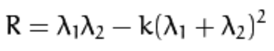
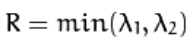
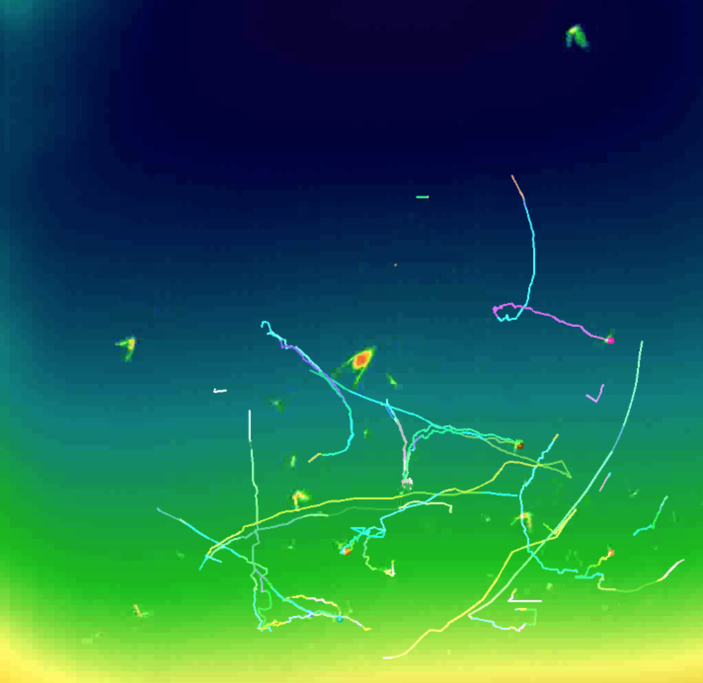
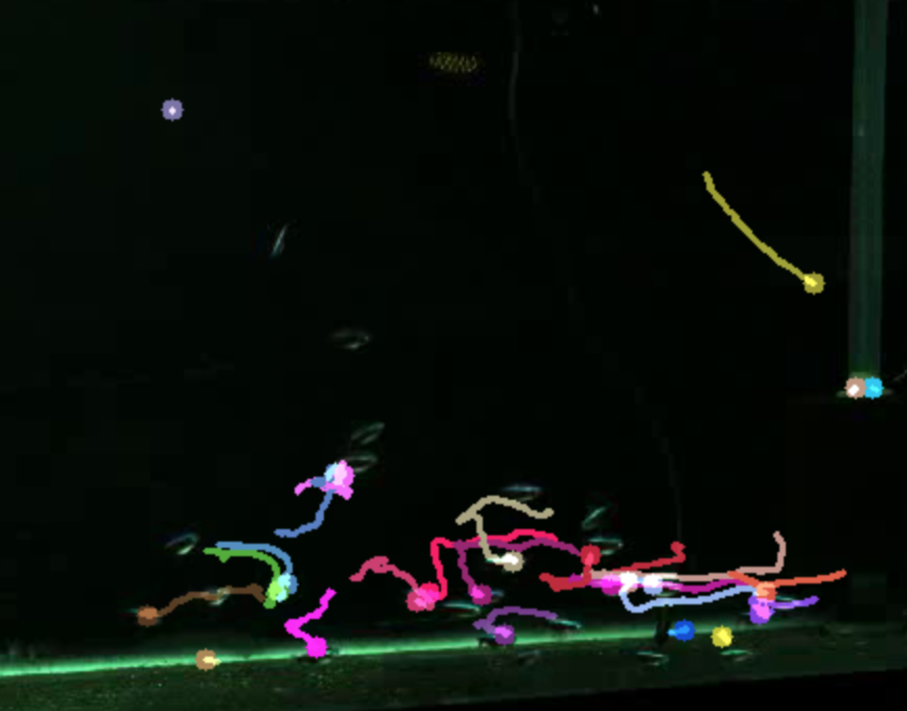
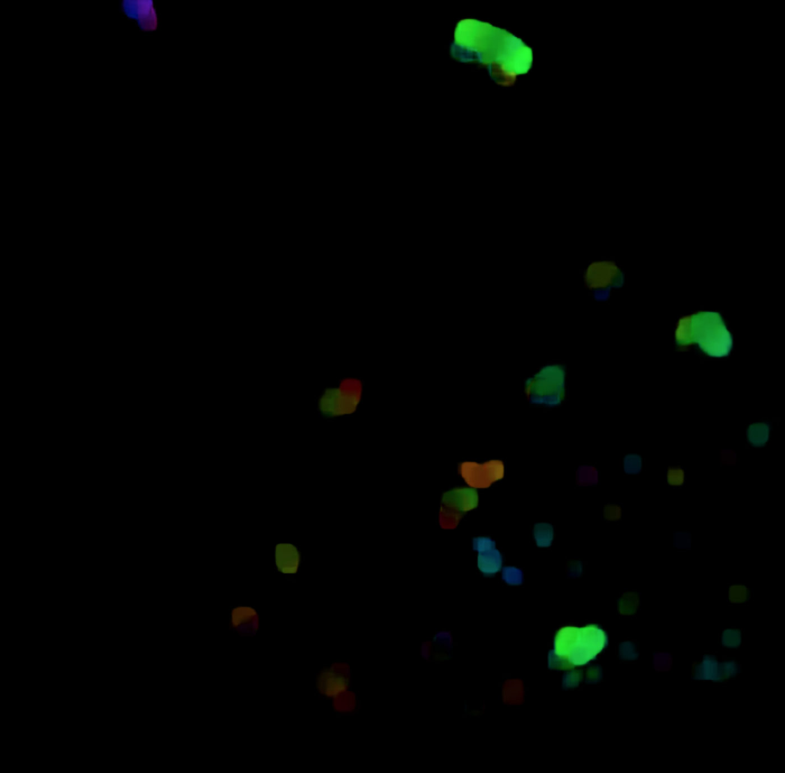

Tracking images of bats and fish using optical flow and kalman filter. This problem is known as multi-object tracking. Also, this programming assignment provided me with an opportunity to learn what are the available algorithms and code repositories frequently used for the task of multi-object tracking. Trajectory lines are shown as for object tracking to show the object movement trail in the frames.
I have used OpenCV 3.3.0 and Anaconda Python 3.6.2. I have used Tomas-Shi corner detection to detect the good features to track for sparse optical flow in the first frame of the video and additionally I have also used dense optical flow. I have investigated and experimented with Kalman Filter for object tracking. I have used ffmpeg command in Unix to convert the JPG and PPM image sequences to AVI video format to feed into VideoCapture method in cv2. I also used the cv2.VideoWriter method for creating a video out a sequence of images however seems that caused problems with optical flow and converting images to video using FFMPEG is a more reliable solution. Side-note: This page is compatible with Google Chrome.
From the results it can be understood that optical flow works really well on the fish dataset and not very well on the bat dataset. For the bat dataset kalman filter works really great. My understanding is that due to sudden joining of the bats to the scene, optical flow is unable to grab their good features because in my implementation, good features rely on the first frame. One thing that we can discuss is using optical flow is definitely better than something like meanshift algorithm because in meanshift you have to select the bounding box for each object that you want to track in the first frame and also you need to have very smooth movements in order to track them using meanshift algorithm. As we see with sparse optical flow, if a sudden movement happens, the tracking trail is longer (shows the acceleration) and if a slow short movement happens the tracking trail is short.
Harris corner detection uses the following formula:

While Thomas-Shi corner detection uses this other version of the formula:

Thomas-Shi corners are detected using the OpenCV method cv2.goodFeaturesToTrack(). As seen in the below images, Thomas-Shi corner detection works quite well for fish dataset and doesn't work very
well for the bats dataset.
In the sparse optical flow method we only use points of interest to be tracked. As in my implementation, I have used Thomas-Shi corners to track the objects. This is due to the fact that optical flow is a very computational task and we could reduce the computation and speed up the task by only focusing on tracking the most important objects.
 In dense optical flow, tracking is done for all the points. Dense optical flow is typically way slower and needs to be run on GPUs for acceleration. However, dense optical flow tends to be more accurate. Gunner Farneback's Optical Flow is a famous method for computing the dense optical flow. In this part, I have used cv2.calcOpticalFlowFarneback for dense optical flow computation.
